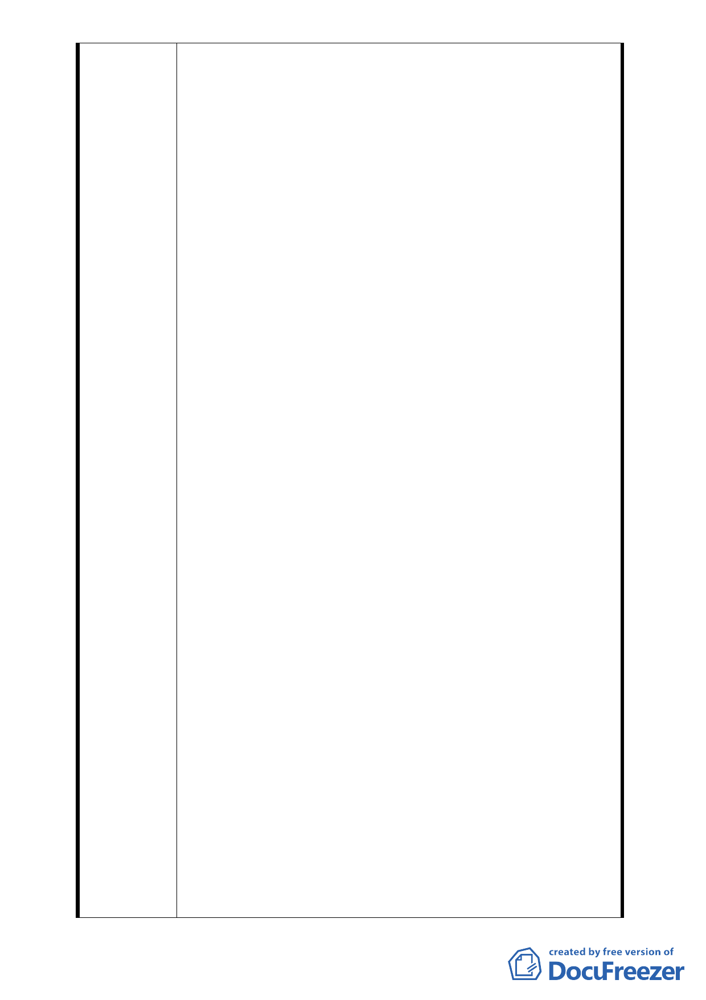

於溫州路 52 巷南北二側都市更新單元劃設的案子，
我們大部分的人都是一般的市井小民，我們覺得很多
我們之前做過的努力在 98 年 10 月 13 日第 601 次臺
北市都委會會議上，都沒有被採納，甚至連討論都沒
有被討論就作決議，這實在有很嚴重的瑕疵，會議中
有很多情況根本與事實不相符，實在有必要請市政府
再出面開協調會。嚴重的瑕疵、爭議瑩瑩大者列舉如
下。
1. 未執行 595 次委員會議決議，更新處有瀆職之嫌
此次 601 次委員會中，更新處有投影南北兩側
調查結果。北側人數高達 90％、面積 87.69％，南
側人數 40.63％、面積 54.17％同意參與本案更新。
更新處有統計無執行，如此高的同意比例下從 7
月 30 日後未開過協調會，協商周邊地主納入原申
請案中。
2. 更新處瞞上欺下
主席會中說其他案（我們送的）只是陳情意見，
我們這次的主題是討論目前的案子是要通過、要撤
件或是要擴大，所以就要看其他委員針對這有甚麼
意見，接著又問更新處有甚麼問題，但是更新處竟
說沒意見。事實上是有正式行文至更新處申請劃定
的案子（案號：98.8.14 涂字第 001 號和 98.8.26 昌
字第 001 號），我們已整合好南北兩側共 4959 平方
米完整街廓劃定申請的案子，比原案更大更完整，
這不只是陳情意見而已，我們的申請案卻遭更新處
以本案仍在審議程序中之理由退還。我們執疑目前
法令並無明確規範劃定區域重複、擴大的問題，更
新處不協商解決，反而把我們整合人數更多、面積
更大更完整的劃定案退還。如果照這樣作法發展下
去，臺北市的都更土地都會被惡質建商卡位，各個
劃地為王，市井小民只能任其宰割了。更新處對我
們已申請劃定、高比例參與原案等有利我們的完全
噤聲，是否受到外界施壓？真是啟人疑竇。
3. 更新處、達新是否偽造文書
會中更新處云：達欣有於 7 月 26 日與周邊地主
協商未果…云云。事實上達欣都沒有找我們協商，
也沒有收到任何協商資料。 更新處有誤植、誤導
委員們之嫌，或是達欣有偽造文書之嫌。
4. 週邊利害關係地主不能列席，登記發言不讓發
言，踐踏百姓權益
- 20 -